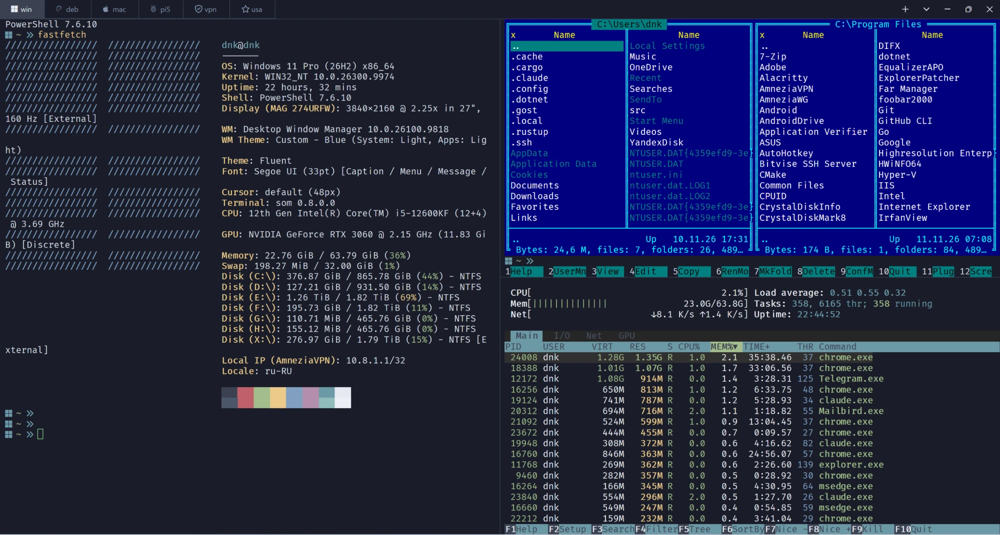
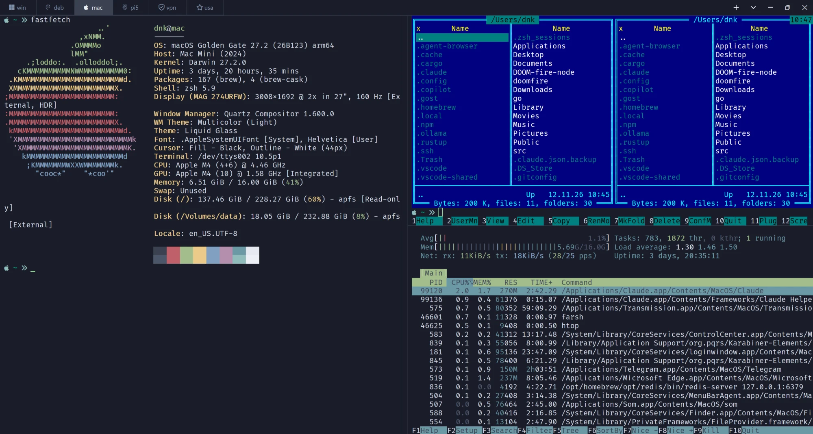
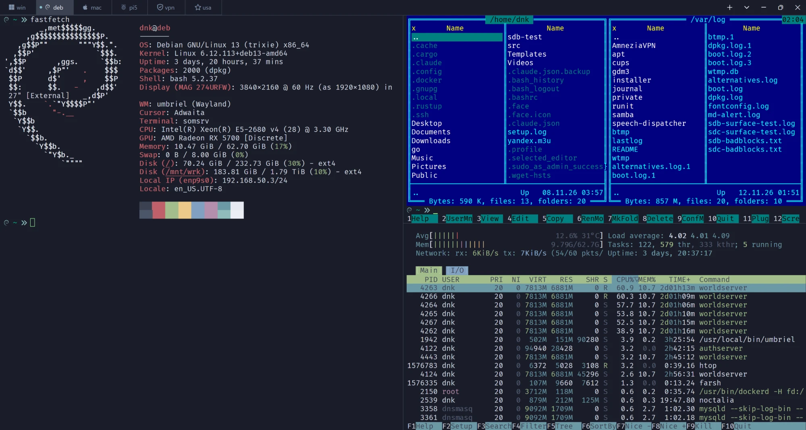
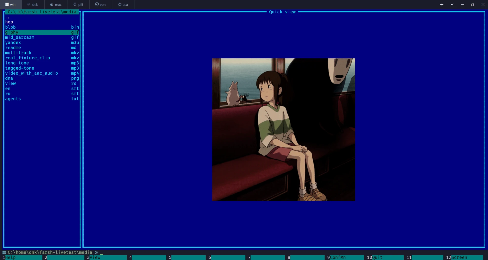
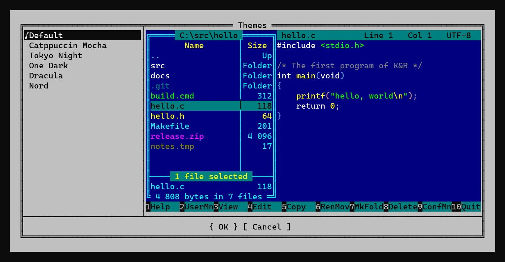

farsh запускает ваш настоящий bash, zsh или PowerShell и кладёт поверх него панели Far Manager — точь-в-точь как в Far 3, клетка в клетку. Командная строка под панелями — это строка самого шелла, с вашим промптом, алиасами и историей. Нажали Ctrl+O — и перед вами чистый шелл, как будто farsh тут и не было.
У Far всегда была командная строка. Своя: одно поле ввода, которое отдаёт команду в cmd.exe и тут же о ней забывает. Ни дополнения вашего шелла, ни функций, ни промпта, ни PSReadLine, ни fzf. Файловый менеджер, к которому прикрутили обрубок шелла. farsh переворачивает эту конструкцию.
Один и тот же farsh в PowerShell на Windows, в zsh на macOS и в bash на Debian. Справа сверху — панели farsh, под ними htop, слева — обычный шелл с fastfetch: farsh живёт рядом с вашими программами, а не вместо них.



Панели, диалоги и меню farsh сверены с настоящим Far 3.0.6446 дампом консоли — клетка к клетке, атрибут к атрибуту, а не на глаз.
Десять режимов просмотра, ширины колонок, Folder/Up, размеры в K/M/G, сортировка Far-овским порядком строк (цифры как числа), группы раскраски, кейбар, который меняется, пока держите Shift/Ctrl/Alt.
Командная строка — строка самого шелла. Enter запускает команду в шелле, панели уступают место её выводу и возвращаются со свежим списком файлов и курсором на месте.
chsh -s farsh — и всё, что не интерактивная сессия (ssh-команды, scp, rsync, скрипты, -c, пайпы), молча уходит в настоящий шелл. Если farsh упадёт — сессию подхватит настоящий шелл.
F4 и F3 — встроенный современный редактор fresh: подсветка tree-sitter, мышь, выделение, поиск — внутри статусной строки и кейбара Far. Ctrl+Q показывает подсвеченный текст файла под курсором.
Портированный arclite: 7z, zip, tar, gzip открываются по Enter и листаются как каталоги. Распаковка, создание, добавление и удаление в zip, проверка архива. Чистый Rust, 7-Zip не нужен.
Копирование, перенос, удаление в Корзину и Wipe с Far-овскими подтверждениями и прогрессом, атрибуты и время (Ctrl+A), жёсткие ссылки, junction и симлинки (Alt+F6), фильтры, поиск файлов, сравнение папок, описания.
«Доступ запрещён» на Windows — и вы видите Far-овский диалог повышения. Копия farsh через UAC делает работу по каналу, который можете открыть только вы.
Каждая опция — под именем и со значением по умолчанию из Far. far:config со всеми 297 настройками, справка Far со ссылками и поиском, пользовательское меню в формате FarMenu.ini, ассоциации, истории.
Интерфейс и справка на русском из перевода самого Far. Все сочетания клавиш работают и в русской раскладке — как Xlat в Far.
В терминале Som вьювер farsh говорит на его протоколе богатого контента — и терминал превращается в медиацентр, не выходя из файлового менеджера.

giphy.gif, и анимация играет прямо в панели, на фоне темыPNG, JPEG, анимированный GIF — в F3 на весь экран или в панели быстрого просмотра, пока ходите курсором по файлам.
mp3, flac, ogg с виджетом плеера; плейлисты .m3u и .cue трек за треком, переключение n/p; интернет-радио.
mp4, mkv, avi прямо в терминале. a — следующая звуковая дорожка, s — субтитры.
Документ .md отрисовывается как документ — с заголовками, списками и встроенными картинками, с прокруткой.
Фон виджетов и полей вокруг картинок следует выбранной теме farsh.
farsh работает везде: Windows Terminal, kitty, iTerm2, Alacritty. Текст покажет текстом, двоичный файл — честно назовёт двоичным.
Options → Themes показывает живой пример farsh в каждой теме: панель с файлами и редактор с кодом. Классический синий Far, Catppuccin Mocha, Tokyo Night, One Dark, Dracula и Nord встроены; свою тему можно написать в JSON и положить в ~/.config/farsh/themes. Тема красит всё: панели, диалоги, меню, подсветку кода в редакторе и фон медиа-виджетов. Ниже — настоящие кадры этого окна.

Готовых бинарников пока нет: farsh собирается из исходников. Нужен Rust 1.88 или новее (rustup.rs) и компилятор C (для tree-sitter).
cargo install --locked --git https://github.com/errordnk/farsh --root ~/.localБинарник окажется в ~/.local/bin/farsh. Запустите его из терминала — или сделайте логин-шеллом:
echo ~/.local/bin/farsh | sudo tee -a /etc/shells
chsh -s ~/.local/bin/farshРаботать при этом будет ваш прежний шелл: farsh берёт $FARSH_SHELL, или Shell.Program из своих настроек, или $SHELL, если это не farsh, иначе bash (на macOS — zsh).
git clone https://github.com/errordnk/farsh
cd farsh
cargo build --releaseСборке под Windows нужен FFmpeg из vcpkg (им farsh перечисляет звуковые дорожки и субтитры видео): поставьте ffmpeg:x64-windows и укажите путь в VCPKG_ROOT. DLL FFmpeg упаковываются внутрь farsh.exe и загружаются, только когда они нужны, — так что готовый бинарник работает и там, где FFmpeg нет.
Запускайте target\release\farsh.exe в Windows Terminal или Som. Шелл по умолчанию — PowerShell; Git Bash и bash из MSYS2 тоже работают.
Если вы работали в Far, вы уже умеете работать в farsh. Вот что стоит знать сверх того.
| Клавиша | Что делает |
|---|---|
| Ctrl+O | панели вкл/выкл — без них вы в чистом шелле |
| любой текст | уходит в командную строку шелла, Enter запускает |
| Tab | другая панель (без панелей Tab — дополнение вашего шелла) |
| Ctrl+E Ctrl+X | история шелла назад/вперёд (стрелки двигают курсор панели) |
| F3 F4 Ctrl+Q | просмотр, редактор, быстрый просмотр в соседней панели |
| F5 F6 F7 F8 | копировать, перенести, создать папку, удалить |
| Alt+F7 | поиск файлов |
| F9 | меню: Left, Files, Commands, Options (там и Themes), Right |
| Ctrl+1…Ctrl+0 | десять режимов просмотра Far |
| Ctrl+F3…Ctrl+F12 | сортировка |
| F1 | справка Far со ссылками |
far:config + Enter | все настройки |
| F10 | выход |